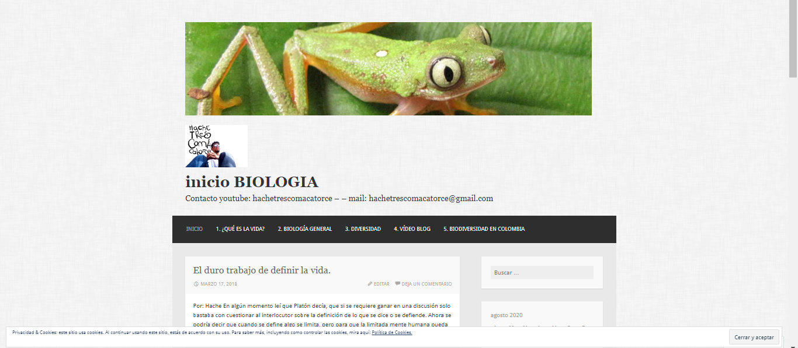

la divulgacion cientifica como medio para difundir
el conocimiento, como manera de permitir el acceso al
conocimiento, integrando el arte . . . Ir a biologiamyblog.wordpress.com

Educacion Ambiental
• Guía Profesional Corporación para la investigación e innovación educativa y el desarrollo comunitario BITÁCORA
• Guía Ambiental Paseamos Educando Educación Ambiental y Lúdica
• Guía museo Museo de Historia Natural ICN Universidad Nacional de Colombia
Docente de biologia
• EDUPOL, Formación a distancia en televisión educativa, diseñando clases dinámicas por medio del
aprendizaje significativo, construcción de material y actualización de aula virtual en plataforma
MOODLE, elaboración y revisión de contenidos impresos tales como simulacros evaluativos y
libro-cartilla. Documentación y preparación de clases para proyecto de pre-medico.
• Profesor colegio personalizado Teaching and tutoring T&T
• Profesor colegio semi-personalizado Gimnasio NUevo Reino
• prefesor Preuniversitario-Presaber